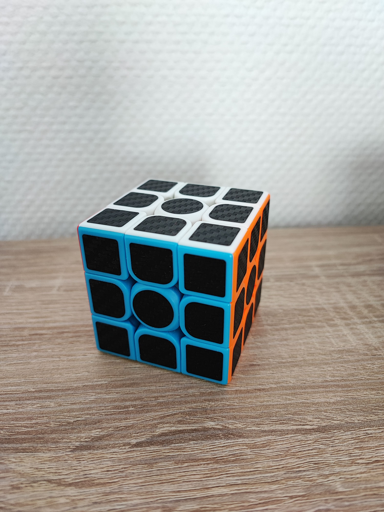

Définition : Le Rubik's Cube est un casse-tête composé de 26 petits cubes de couleur, chaque face comportant 9 cubes, fixés à un axe central qui permet leur déplacement, afin de les disposer par couleur sur chaque face du cube. Ses faces sont blanche , jaune, verte , bleue , orange et rouge.
JOUEN Solène, L1 MI, Groupe B3